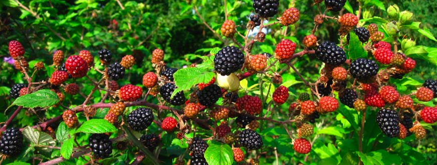

End of Life Center
Milo’s End of Life Center aims to provide a spectacular way to end your canine companion’s life and say good bye. The process starts when you pull around back where you drop your furry friend off for their treatment. The patent pending process, centered around the use of bricks is relatively quick and painless. While you wait you and your children can frolic in the back field and pick blackberries (for a nominal fee)!
Once the process is complete we’ll load your friend’s carcass into the back of your vehicle neatly wrapped in a tarp for you to take home for disposal. If you are unable to bring your own tarp, we have some available for purchase.